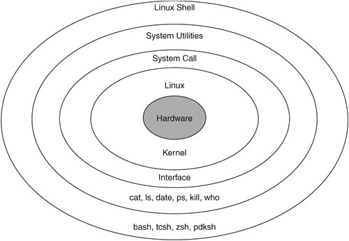

6.7. Porting Shell Scripts to LinuxFigure 6-1 shows the Linux shell in relation to the rest of the operating system. The shell, as it is aptly named, sits on the outer edge of the system. It gives users easier ways to interact with system utilities that query or control the operating system, start or stop processes, and list or modify files and directories. Figure 6-1. Linux shell creates an environment to access system interfaces easier. Depending on the Linux installation, several shells developed for Linux are installed by default. The more popular shells developed for Linux are bash, tcsh, zsh, and pdksh. bash, however, is considered the default shell on Linux. On HP-UX, the main shells available are bsh, ksh, and csh. Most applications use these shells to source or check environment variables and kick off processes or deamons. In porting projects that involve porting of test harnesses, however, use of scripting becomes more prevalent. Table 6-11 compares HP-UX and Linux shells.
Porting scripts is not covered in this book, but an excellent reference book about UNIX and Linux shells that can be helpful is UNIX Shells by Example, 4th edition (Prentice Hall, 2005). |